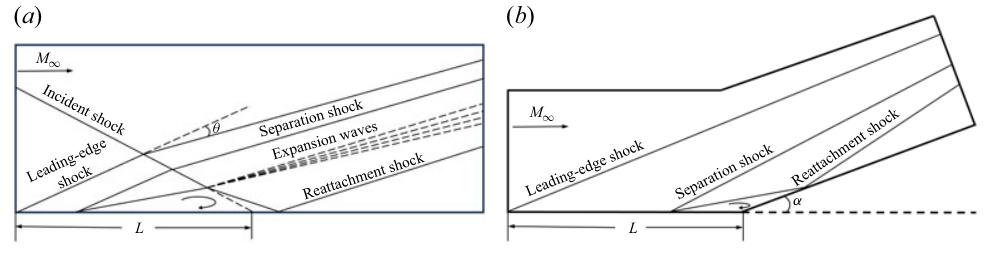
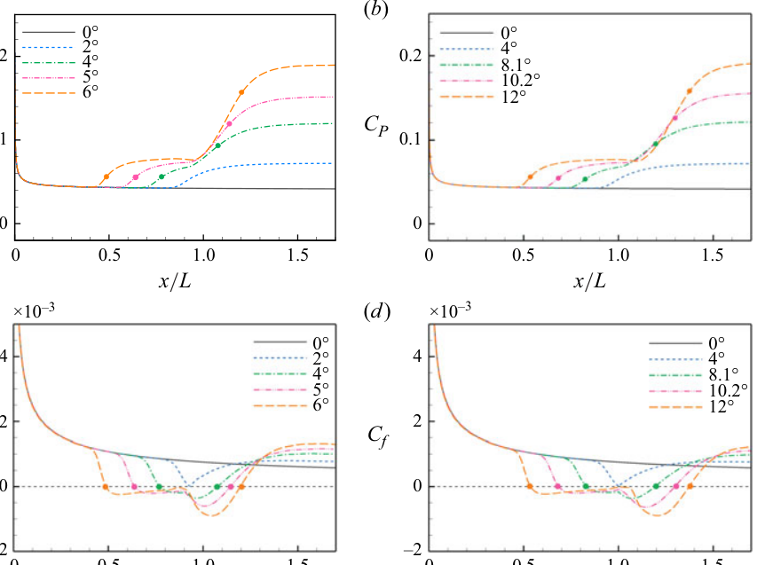
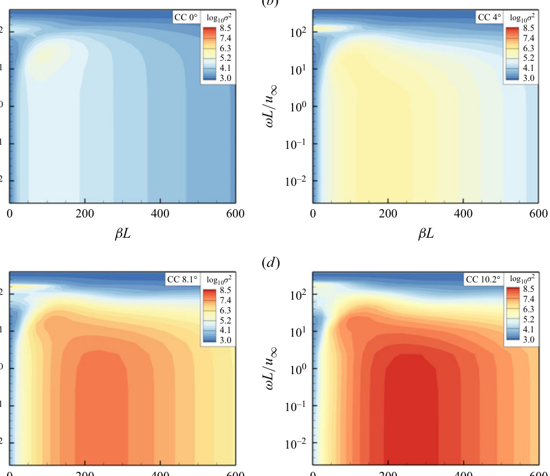
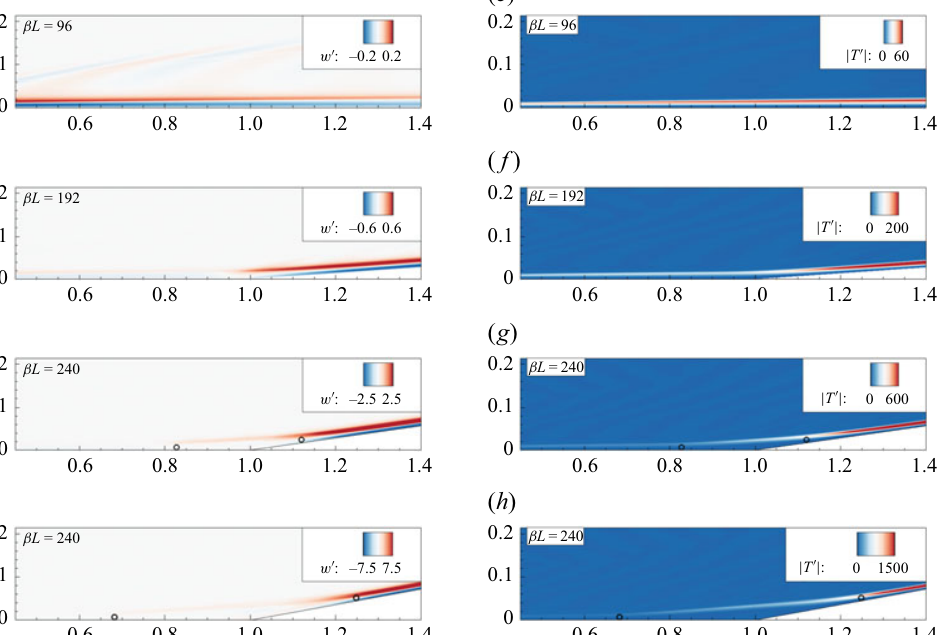

01中文摘要
通过压缩拐角和入射激波两类构型，系统研究马赫6激波/边界层干扰的流动不稳定性。用全局稳定性分析确定全局稳定边界和全局不稳定模态特征；resolvent分析将工况分为平板、无分离、小分离和大分离四类。最优响应从平板工况的第一模态转变为干扰区放大后的条带结构，条带和第一模态（斜模态）的放大均归因于Görtler不稳定；第二模态增长很弱，分离泡内出现更高阶Mack模态。圆角拐角和线性稳定性分析进一步验证了斜模态的放大机制。
原始摘要（英文/原文）
, The flow instabilities in shock-wave–boundary-layer interactions at Mach 6 are comprehensively investigated through compression corner and incident shock cases. The boundary of global stability and the characteristics of globally unstable modes are determined by global stability analysis. In resolvent analysis, cases are categorized into flat plate, no separation, small separation and large separation flows. The optimal response shifts from the first mode in the flat plate case to streaks after the amplification in the interaction region. The amplification of streaks and the first mode (oblique mode) are both attributed to the Görtler instability. Meanwhile, the second mode exhibits minimal growth and higher Mack’s modes appear within the separation bubble. Rounded corner case and linear stability analysis are utilized to further validate the amplification mechanism of the oblique mode.
02阅读说明
数值稳定性分析论文（GSA + resolvent analysis + LST；二维基流、展向周期扰动），36 页全文完整（含 Appendix A–C 与参考文献）。图件清单 16 项，本文选取 4 项；公式 (2.1)–(2.16)、(4.1)–(4.4) 的文本层基本完整，其中 (2.8)–(2.14) 已对照 PDF 第 6 页、(4.1) 已对照 PDF 第 8 页核对。定量信息主要来自 §4、表1、图3、图5、图8–13、图17–27。页码均为 PDF 页（即 bundle 的 PAGE 标记）；文中未给出实验测量或 DNS 对照，全部结论来自线性/输入–输出分析。 文章类型：期刊
03一句话核心与三句话摘要
马赫6下压缩拐角与入射激波SWBLI中，条带与斜模由Görtler曲率机制放大，第二模在分离泡内难以持续增长。
- 现有研究对 SWBLI 中条带放大机制（斜压效应、非线性、全局不稳定饱和、Görtler）仍有争议，第一模放大机制研究很少，且缺少压缩拐角与入射激波两种构型的系统对比（p4）。 AI概括
- 作者以 M∞=6、p∞=305 Pa、T∞=73 K、Re∞=3×10^6 m^-1、Tw=344 K 的条件，对压缩拐角（α=0°/4°/8.1°/10.2°，GSA 另加 11°/12°）与等压升入射激波（θ=0°/2°/4°/5°，GSA 另加 5.5°/6°/6.5°）做 GSA、resolvent 分析与 LST，并用圆角拐角 r/L=4.2 作对照（p7–8、p10–12、p24）。 原文明确
- 结果显示条带放大最强、斜模次之、第二模增长有限；条带与斜模在凹曲率处近线性增长且与 LST 增长率一致，圆角算例证明其与分离泡无关；作者据此把两者归因于 Görtler 机制，并指出斜模可能源自熵–涡谱（p16–18、p27–31）。 原文明确
04核心内容清单
| 要点 | 类型 | 重要性 | 原文依据 | 属性 |
|---|---|---|---|---|
| 给出 SWBLI 不稳定性的分类框架：模态（LST/GSA，含 Mack 模与全局定常/振荡模）与非模态（resolvent，含瞬态增长、条带、Görtler）。 | 综述框架 | B | 图1，第2页 | 原文明确 |
| 在相同压升下，入射激波的分离区比压缩拐角更短、更靠上游（表1：Lsep/L 0.305 vs 0.360，0.505 vs 0.612，0.710 vs 0.837）。 | 定量结果 | A | 表1，第9页；图3，第9页 | 原文明确 |
| 全局稳定性边界：压缩拐角 α=10.4°、入射激波 θ=5.8°；数值验证分别落在 10.2°–11° 与 5.5°–6°。 | 定量结果 | A | §4.2，第10–11页；图5，第11页 | 原文明确 |
| 刚越过临界角时只出现定常全局模；更强相互作用下出现振荡模及 S-O/O-S 模态转换（CC 12°、IS 6.5°，βL≈75）。 | 机理/现象 | A | §4.2，第11页；图5、图6，第11–12页 | 原文明确 |
| 在全部工况中条带放大最强；随相互作用增强，条带峰值增益向更大展向波数移动且波数带变宽（平板 βL=96 → CC 4° 约 200 → IS 5° 达 312）。 | 定量结果 | A | 图8–10，第13–15页 | 原文明确 |
| 斜模（第一模）也被放大但弱于条带，其频率与波数基本不变；CC 10.2° 时位于 βL=120、ωL/u∞=16.8。 | 定量结果 | A | §4.3.1，第14页；图10(b) | 原文明确 |
| 第二模在无分离弱激波（IS 2°）时增强约一个量级，一旦出现分离则增长不显著，且频率随激波强度略升。 | 定量结果 | A | §4.3.1，第13–14页；图9、图20–21 | 原文明确 |
| 条带增长发生在强凹曲率处（拐角或分离/再附点），分离区中部曲率小则增长减慢；入射激波还出现膨胀波后的第二个曲率峰。 | 机理 | A | 图13，第18页；§4.3.2，第16–17页 | 原文明确 |
| 含曲率 LST 的 Görtler 模增长率与 resolvent 的 Chu 能量斜率在压缩拐角算例中高度一致，证明条带属对流型不稳定；入射激波在膨胀波后被 LST 低估。 | 验证 | A | 图13–15，第18–19页 | 原文明确 |
| 圆角拐角 r/L=4.2 在相同压升下消除分离，条带与斜模仍沿圆弧近指数增长，从而证明其放大与分离泡无关、由曲率驱动。 | 验证 | A | 图24–27，第25–26页 | 原文明确 |
| LST 曲率扫描与感受性分析显示：曲率趋于零时斜模变为稳定；斜模在 ω→0 时并入熵–涡谱，平面第一模则源自慢声学谱。 | 机理 | B | 图28–30、图33，第27–30页 | 原文明确 |
| 次优增益比最优增益低至少三个数量级，故仅分析最优响应足以刻画本类流动的强迫放大。 | 方法验证 | B | 图10，第15页 | 原文明确 |
05引言：研究问题与领域缺口
【原文明确】SWBLI 广泛存在于跨声速机翼、超声速发动机进气道与叶栅中，会带来气动加热过载、结构疲劳和进气道不起动，并显著影响流动稳定性、动力学与转捩（p1）。作者按图1 把 SWBLI 不稳定性分为模态类（LST/GSA：Mack 模、全局定常/振荡模）与非模态类（resolvent 分析：瞬态增长、条带、Görtler 不稳定性）（p2）。【原文明确】缺口：(1) 条带放大机制仍有争议，已有斜压效应、非线性相互作用、全局不稳定饱和、分离/再附凹曲率诱发的 Görtler 等多种解释（p3）；(2) Mack 模尤其第一模的放大机制研究很少，Hao et al. (2023) 在 Mach 7.7 压缩拐角因 Tw/T0=0.18 冷壁未出现第一模，使第一模与所谓“剪切层不稳定性”的界限模糊（p4）；(3) 全局稳定性研究多针对单一构型，压缩拐角与入射激波虽常被视为等价，却缺少系统对比（p4）。【原文明确】目标：以 Willems et al. (2015) 的 Mach 6 实验条件，用 GSA、resolvent 分析与 LST 给出层流 SWBLI 不稳定性的完整图像，比较两种构型的共性与差异，并重点厘清第一模（后改称斜模）的放大机制与稳定性来源（p4）。【AI概括】本文没有形式化假设检验，其核心可检验命题是“条带与斜模的放大由 Görtler 曲率机制驱动，而非分离泡的固有属性”，并以圆角无分离算例和 LST 曲率扫描作为判别证据。
06流动条件与几何构型
| 项目 | 数值/描述 | 依据 | 备注 |
|---|---|---|---|
| 来流马赫数 M∞ | 6 | §3.1，第7页 | 取自 Willems et al. (2015) 斜激波 SWBLI 实验条件 |
| 来流静压 p∞ | 305 Pa | §3.1，第7页 | |
| 来流静温 T∞ | 73 K | §3.1，第7页 | |
| 单位雷诺数 Re∞ | 3×10^6 m^−1 | §3.1，第7页 | |
| 特征长度 L | 240 mm（无粘激波入射位置；压缩拐角的拐角位置） | §3.1，第7页 | |
| 壁面条件 | 无滑移、等温壁 Tw=344 K | §3.2，第8页 | |
| 入射激波工况 θ=0° | 平板对照（无激波） | §4.3，第11页 | |
| 入射激波工况 θ=2° | 无分离（弱相互作用） | §4.1、§4.3，第8、11页 | |
| 入射激波工况 θ=4° | 小分离（与 CC 8.1° 等压升） | §4.3，第11页；表1，第9页 | |
| 入射激波工况 θ=5° | 大分离（与 CC 10.2° 等压升） | §4.3，第11页；表1，第9页 | |
| 入射激波 GSA 工况 θ=5.5° | 低于临界角，用于验证稳定性边界 | §4.2，第10–11页 | |
| 入射激波 GSA 工况 θ=6° | 刚超过临界角，仅定常模 | §4.2，第11页 | |
| 入射激波 GSA 工况 θ=6.5° | 出现附加振荡模（O 模）及 O-S 模 | §4.2，第11页 | |
| 压缩拐角工况 α=0° | 平板对照 | 图8(a)，第13页 | |
| 压缩拐角工况 α=4° | 无分离（与 IS 2° 等压升） | §4.1、§4.3，第8、11页 | |
| 压缩拐角工况 α=8.1° | 小分离（与 IS 4° 等压升） | 表1，第9页 | |
| 压缩拐角工况 α=10.2° | 大分离（与 IS 5° 等压升） | 表1，第9页 | |
| 压缩拐角 GSA 工况 α=11° | 刚超过临界角，仅定常模 | §4.2，第11页 | |
| 压缩拐角 GSA 工况 α=12° | 出现 S-O 模；表1 中 Lsep/L=0.837 | §4.2，第11页；表1，第9页 | |
| 圆角压缩拐角 | α=10.2° 等效、圆角半径 r/L=4.2，无分离 | §4.3.5，第23–24页 | |
| 展向波数范围 βL | 0–600 | 图8、图9 坐标，第13–14页 | |
| 角频率范围 ωL/u∞ | 10^−2–10^2（对数坐标） | 图8、图9 坐标，第13–14页 | |
| GSA 网格 | 流向×法向 700×300；首层法向高度 5×10^−6 m，网格雷诺数量级 1 | §3.2，第8页 | |
| resolvent 网格 | 流向×法向 1100×250；第二模每波长至少 20 个网格点 | §3.2，第8页 | |
| 强迫位置 | x_f/L=0.083，自壁面延伸至自由流 | §4.3，第12页 | |
| 基流维数/扰动假设 | 二维定常基流，扰动沿展向周期（模态形式 exp(iβz)） | §2.2，第5页；图2，第7页 |
07核心现象与关键参数
| 参数 | 定义 | 数值 | 关系/说明 | 依据 |
|---|---|---|---|---|
| 分离点位置（CC α=8.1°） | x/L，Cf 由正变负的位置 | 0.834 | 与再附点 1.194 组成 Lsep/L=0.360 | 表1，第9页 |
| 分离点位置（SI θ=4°） | x/L | 0.771 | 再附点 1.076，Lsep/L=0.305 | 表1，第9页 |
| 分离点位置（CC α=10.2°） | x/L | 0.686 | 再附点 1.298，Lsep/L=0.612 | 表1，第9页 |
| 分离点位置（SI θ=5°） | x/L | 0.640 | 再附点 1.145，Lsep/L=0.505 | 表1，第9页 |
| 分离点位置（CC α=12°） | x/L | 0.537 | 再附点 1.374，Lsep/L=0.837 | 表1，第9页 |
| 分离点位置（SI θ=6°） | x/L | 0.487 | 再附点 1.197，Lsep/L=0.710 | 表1，第9页 |
| 压力上升率 pr | pr=(p2−p1)/p1，式(4.2) | 两构型在各角度下差异均小于 4% | 用于定义“等压升”对应工况 | §4.1，第9页 |
| 临界斜坡角 α_cr | 全局不稳定性起始的压缩拐角角度 | 10.4°（数值边界 10.2°–11°） | 由 Hao et al. (2021) 判据给出，本文 GSA 验证 | §4.2，第10–11页 |
| 临界偏转角 θ_cr | 全局不稳定性起始的入射激波偏转角 | 5.8°（数值边界 5.5°–6°） | 由 Song & Hao (2023) 判据给出，本文 GSA 验证 | §4.2，第10–11页 |
| 平板第一模（斜一阶模）最优增益峰 | σ² 在 (βL, ωL/u∞) 平面的峰值位置 | βL=96，ωL/u∞=24（f=16.4 kHz） | 作为各工况增益变化的基准 | §4.3.1，第12页；图8(a)，第13页 |
| 平板条带增益带 | 低频条带响应区 | ωL/u∞<2.4（f<1.64 kHz），50<βL<180 | 条带对应反向旋转流向涡 | §4.3.1，第12页 |
| 平板第二模 | 高频局部最优增益 | ωL/u∞=120（f=81.9 kHz），βL=0 | 第二模为二维高频模态 | §4.3.1，第12页 |
| IS θ=2° 第二模增益变化 | 相对平板的最优增益变化 | 增强约一个数量级 | 与条带减弱形成对比 | §4.3.1，第13页；图9(b) |
| IS θ=5° 条带最大增益位置 | 最优增益峰值对应展向波数 | βL=312 | 较平板的 96、CC 4° 的约 200 继续右移 | §4.3.1，第13页；图9(d) |
| CC 10.2° 斜模位置（增益分离图） | 最优/次优增益差最大处 | βL=120，ωL/u∞=16.8 | 用于从强条带背景中识别斜模 | §4.3.1，第14页；图10(b) |
| 次优与最优增益差 | gain separation | 至少 3 个数量级 | 支持仅用最优响应分析 | §4.3.1，第14页；图10 |
| CC 12° S 模 / S-O 模波数 | 全局模态对应 βL | βL=22（S）/βL=58（S-O） | 两模由虚线连接，属同一模态族 | 图6，第12页 |
| IS 6.5° 模态波数 | 全局模态对应 βL | βL=34（S）、72（O）、79（O-S）；正文称 O-S 在 βL≈75 出现 | O 模与 O-S 模同族 | 图6，第12页；§4.2，第11页 |
| 圆角拐角条带峰 | 最优增益峰值波数 | βL=288 | 大于尖角 α=10.2° 的 βL=240 | §4.3.5，第24页；图25(a) |
| 圆角拐角斜模与第二模 | 增益分离图定位的斜模、最优增益中的第二模 | 斜模 βL=144、ωL/u∞=12；第二模 ωL/u∞=144 | 第二模比尖角更强 | §4.3.5，第24–25页；图25、图26 |
| 曲率定义 K | 边界层边缘流线曲率，式(4.4) | K=(d²y/dx²)/[1+(dy/dx)²]^{3/2} | 用于与 Chu 能量斜率对照，判断 Görtler 机制 | §4.3.2，第16页 |
| Chu 能量 | 式(2.13)，‖Û‖²_E=Û*MÛ | 沿法向积分后随 x 分布（图13、17、21、27） | 其斜率与 LST 增长率比较 | §2.3，第6页；图13，第18页 |
08方法与数据
【原文明确】基流用三维可压缩 Navier–Stokes 方程（式2.1–2.2），在自研多块并行有限体积求解器 PHAROS 中计算：无粘通量为 HLLC 格式，粘性通量二阶中心格式，时间推进采用隐式线松弛（p5）。GSA 将守恒量分解为二维定常基流与三维小扰动（式2.3），忽略高阶项得 LNS（式2.4–2.5）；设扰动沿展向周期，取模态形式（式2.6），得特征值问题 A(β)Û=−i(ωr+iωi)Û（式2.7）；Jacobian 用二阶格式构造（间断附近修正 Steger–Warming，光滑区中心格式），特征值用 ARPACK 隐式重启 Arnoldi 求解，反演用 SuperLU，ωi>0 判为全局不稳定（p5–6）。resolvent 分析在式(2.5)中加入小扰动强迫项 Bf′（式2.8），强迫与响应取相同 β、ωr 的模态形式（式2.9–2.10），得 Û=RBf̂、R=−(A+iωrI)^−1（式2.11）；以 Chu 能量定义响应/强迫范数（式2.13），最优增益 σ² 为式(2.12)的极大值，最终化为特征值问题 B*M^−1R*MRBf̂=σ²f̂（式2.14），最大特征值即最优增益（p6）。LST 采用局部平行假设与模态形式（式2.15），得常微分方程（式2.16），壁面与远场满足 û=v̂=T̂=ŵ=0（式2.17–2.18）；用 h1=1+Ky 引入曲率，系数见 Ren & Fu (2014) 附录，离散用单域 Chebyshev 谱配置（全局谱）加四阶紧致差分（局部精化）（p7）。网格：GSA 为 700×300、首层法向高度 5×10^−6 m（网格 Re 量级 1）；resolvent 为 1100×250，保证第二模每波长至少 20 点；网格无关性见 Appendix A（细网格 1000×400、1300×350），强迫位置敏感性见 Appendix C（p8、p32–33）。【AI概括】验证以网格收敛、强迫位置无关性为主，未与实验热流/压力或 DNS 做定量对比；因此其“验证”属于数值自洽性验证。
| 项目 | 内容 | 依据 | 备注 |
|---|---|---|---|
| 基流求解器 | PHAROS：三维可压缩 NS 方程，多块并行有限体积；HLLC 无粘通量，二阶中心粘性通量，隐式线松弛时间推进 | §2.1，第5页 | 控制方程为式(2.1)–(2.2) |
| 全局稳定性分析（GSA） | LNS（式2.4–2.5）+ 展向模态假设（式2.6）→ 特征值问题（式2.7）；Jacobian 二阶离散（间断附近修正 Steger–Warming，光滑区中心） | §2.2，第5页 | ωi>0 表示全局不稳定 |
| 特征值求解 | ARPACK 隐式重启 Arnoldi；反演用 SuperLU 的 LU 分解 | §2.2，第6页 | |
| resolvent（输入–输出）分析 | LNS 加强迫项（式2.8），模态强迫/响应（式2.9–2.11）；以 Chu 能量定义最优增益（式2.12–2.13），化为特征值问题（式2.14） | §2.3，第6页 | 最优增益取最大特征值，最优强迫为对应特征向量 |
| 线性稳定性理论（LST） | 局部平行假设，模态形式（式2.15），ODE（式2.16）；边界条件 û=v̂=T̂=ŵ=0（式2.17–2.18） | §2.4，第7页 | 用于验证 resolvent 结果并做曲率扫描 |
| 曲率处理 | 坐标变换尺度因子 h1=1+Ky，K 为曲率；系数见 Ren & Fu (2014) 附录 | §2.4，第7页 | |
| LST 离散 | 单域 Chebyshev 谱配置（全局谱）+ 四阶紧致差分（局部精化） | §2.4，第7页 | LST 代码由 P. Guo 提供（致谢，第33页） |
| 计算域与边界条件 | 入射激波由入口分段给定：激波下方为自由流，上方及上边界为斜激波关系算得的波后条件；右边界外推出流；下边界无滑移等温壁。压缩拐角左/上边界为自由流 | §3.2，第8页；图2，第7页 | |
| 网格无关性 | 细网格 GSA 1000×400、resolvent 1300×350；比较 Cf（图34）、特征值谱（图35）与最优增益（图36），仅高频有小的偏差 | Appendix A，第32–33页 | |
| 强迫位置敏感性 | α=8.1° 时把强迫从 x/L=0.083 前移至 0.05，最优增益不敏感 | Appendix C，第33页；图38 | |
| 三维特征函数重构 | Appendix B 给出与图6 对应的 GSA 三维特征函数等值面（图37） | Appendix B，第32页 | |
| 验证方式 | 网格收敛、强迫位置无关性、resolvent 与 LST 的增长率/特征函数交叉验证；未与实验或 DNS 定量对比 | §4.3.2–4.3.4，第16–23页；Appendix A/C | AI概括：属数值自洽验证 |
09核心推导与公式
从三维可压缩 Navier–Stokes 方程出发，把流场分解为二维定常基流与小扰动，线性化得 LNS；对展向周期扰动取模态解，把全局稳定性问题化为特征值问题；再在 LNS 中加入强迫项，利用 resolvent 算子与 Chu 能量范数，把“最大能量放大”化为矩阵特征值问题；LST 则在局部平行与曲率坐标下给出另一条独立的特征值途径，用于交叉验证。
关键假设
- 基流为二维定常解，扰动为三维小振幅量，高阶项可忽略（式2.3–2.4）
- 扰动沿展向周期，可写成 exp(iβz) 的模态形式（式2.6、2.9、2.10、2.15）
- GSA 中扰动时间增长率为 ωi，ωi>0 即全局不稳定（§2.2，第6页）
- resolvent 分析适用于全局稳定流（ωi<0），且经过足够长时间后响应与强迫同频同波数（式2.10）
- 能量度量采用 Chu 能量，权矩阵 M 可逆（式2.13–2.14）
- LST 假设流向弱非平行，扰动在法向/展向/时间上周期（式2.15）
- 曲率通过 h1=1+Ky 的坐标变换进入扰动方程（§2.4）
推导过程
以守恒变量 U、无粘通量 F_j 和粘性通量 F_v,j 写出控制方程，作为基流计算与线性化的起点。
把守恒量写成二维定常基流加三维小扰动，代入控制方程并略去高阶项，得到线性化 Navier–Stokes（LNS）方程及其算子形式，A 由基流决定。
设扰动沿展向周期、时间上按复频率演化，代入 LNS 后得到以 β 为参数的特征值问题；特征值的虚部即增长率。
对全局稳定流，在 LNS 中加入指定位置与幅值的强迫 Bf'，并把强迫与响应都写成同频同波数的模态形式。
把模态形式代入含强迫的 LNS，解出响应与强迫的线性关系，得到 resolvent 矩阵 R 及其显式表达式。
定义最优增益为能量型响应范数与强迫范数之比的最大值；能量用 Chu 能量度量，从而把优化问题写成带权范数比。
利用 M 可逆，把增益最大化问题化为广义特征值问题；最大特征值即最优增益，对应特征向量即最优强迫。
在局部平行假设下取法向特征函数，代入 LNS 得关于 y 的二阶常微分方程组；通过 h1=1+Ky 的坐标变换把曲率引入算子，并在壁面与远场取齐次边界条件。
为与 LST 增长率比较，把 Chu 能量沿法向积分得到随 x 的分布；同时由边界层边缘流线计算曲率 K，用于判断 Görtler 机制。
适用边界：推导均为线性化框架：不能描述非线性饱和、breakdown 与转捩位置；resolvent 的最优强迫是数学最优解，不代表真实感受性；Chu 能量范数与权矩阵的具体形式依赖 Bugeat et al. (2019)，本文未重复推导；LST 依赖局部平行与弱非平行假设，在膨胀波后与 resolvent 出现偏差（p18、p21）；曲率仅通过 h1=1+Ky 进入扰动方程，基流曲率不能完全移除（p27）。
10结果：主要发现与关键证据
【原文明确】基流（图3，表1）：θ=2° 与 α=4° 的逆压梯度不足以分离；θ=4°、α=8.1° 开始出现分离激波与再附激波，单一压升被两个压升替代；θ>4°、α>8.1° 时分离区中部出现压力平台（p8）。等压升条件下入射激波的分离区更短且更靠上游：CC(α=8.1°) 的分离/再附点为 x/L=0.834/1.194、Lsep/L=0.360，SI(θ=4°) 为 0.771/1.076、0.305；CC(α=10.2°) 为 0.686/1.298、0.612，SI(θ=5°) 为 0.640/1.145、0.505；CC(α=12°) 为 0.537/1.374、0.837，SI(θ=6°) 为 0.487/1.197、0.710（表1，p9）。两构型压升 pr=(p2−p1)/p1（式4.2）差异均小于 4%（p9）。【原文明确】GSA：临界斜坡角 α=10.4°、临界偏转角 θ=5.8°（p10）；数值边界分别落在 10.2°–11° 与 5.5°–6°，刚超过临界（CC 11°、IS 6°）只出现定常不稳定模；CC 12° 在大波数出现由 S 模派生的“S-O 模”，IS 6.5° 出现附加振荡模并在 βL≈75 转为两个定常模之一“O-S 模”（p11，图5）。【原文明确】resolvent（图8–10）：平板算例最优增益峰值在 βL=96、ωL/u∞=24（f=16.4 kHz，判为斜一阶模），低频区 ωL/u∞<2.4（f<1.64 kHz）、50<βL<180 为条带，高频 ωL/u∞=120（f=81.9 kHz）、βL=0 为第二模（p12）。压缩拐角：α=4° 时条带、第一模、第二模均放大而条带最强，条带峰值移到 βL≈200 且波数范围变宽；α=8.1° 条带继续增强、第一模被放大、第二模增益基本不变；α=10.2° 趋势延续但第二模较 8.1° 弱（p12–13）。入射激波：θ=2° 时第一模略增强、条带反而减弱、第二模增强约一个量级；θ=4° 条带与第一模增强、第二模略降；θ=5° 条带进一步增强、最大增益移至 βL=312、第一模因条带波数范围扩大而难以分辨、第二模略降且频率随偏转角升高（p13–14）。次优增益在强放大区比最优增益低至少三个数量级，说明最优响应占主导；CC 10.2° 的第一模在增益分离图中位于 βL=120、ωL/u∞=16.8（p14，图10）。【原文明确】条带响应（图11–12，f 固定为 1.6 Hz）：无分离时条带自拐角开始增长；有分离时在分离/再附点附近增长、再附后显著加速；入射激波算例的条带被膨胀波打断并向外辐射，这解释了 θ=2° 条带减弱（p15–16）。Chu 能量（图13）显示条带在强凹曲率区近线性增长；CC 算例 LST 增长率与 Chu 能量斜率高度一致，IS 算例在膨胀波之后 LST 低估增长率（p16–18）。第一模（图16–19）分布集中在剪切层，增长模式与条带类似；LST 在远离膨胀波处与 resolvent 一致（p19–21）。第二模（图20–23）呈典型“双胞”结构，分离泡内出现第三、第四、第五阶 Mack 模（α=8.1° 出现第三模，α=10.2° 出现第四、五模），这些高阶模不能持续增长；第二模在再附后若边界层厚度与其流向波长（约半个波长）匹配则可继续增长（p22–23）。【原文明确】圆角拐角（r/L=4.2，图24–27）：在保持等效压升的同时消除分离；条带峰位于 βL=288（大于尖角的 240），第二模在 ωL/u∞=144 更强，第一模经增益分离图定位在 βL=144、ωL/u∞=12；条带与第一模沿圆弧近指数增长，高阶 Mack 模消失（p24–26）。
| 发现 | 证据 | 证据类型 | 强度 | 位置 | 属性 |
|---|---|---|---|---|---|
| 确定并验证了两种构型的全局稳定性边界：压缩拐角 α=10.4°、入射激波 θ=5.8°，数值边界分别为 10.2°–11° 与 5.5°–6°。 | 图5 中增长率随 βL 变号；CC 11°、IS 6° 仅定常模；与 Hao et al. (2021)、Song & Hao (2023) 判据一致 | 定量/验证 | 强 | §4.2，第10–11页；图5，第11页 | 原文明确 |
| 等压升条件下入射激波的分离区更短且更靠上游，压升差异小于 4%。 | 表1 六组数据；图3 的 Cp、Cf 分布 | 定量 | 强 | 表1、图3，第9页 | 原文明确 |
| 条带是 SWBLI 中放大最强的扰动，且峰值增益随相互作用增强向更大展向波数移动、波数带变宽。 | 图8–10 最优增益等值线；平板 βL=96 → CC 4° 约 200 → IS 5° 的 312 | 定量 | 强 | §4.3.1，第12–14页；图8–10 | 原文明确 |
| 斜模（第一模）也被 SWBLI 放大，但弱于条带，且频率与波数基本不变。 | 图16 最优响应；图10(b) 增益分离图定位 βL=120、ωL/u∞=16.8 | 定量 | 强 | §4.3.1、§4.3.3，第14、19–20页 | 原文明确 |
| 第二模在无分离弱激波下增强约一个量级，但在分离泡内不能持续增长；高阶 Mack 模只出现在分离泡内且不持久。 | 图9(b) 与图20–21；α=8.1° 出现第三模，α=10.2° 出现第四、五模 | 定量/现象 | 强 | §4.3.1、§4.3.4，第13、22–23页 | 原文明确 |
| 条带的放大与强凹曲率空间对应：拐角、分离点、再附点处增长快，分离区中部因曲率小而减慢。 | 图13 的 Chu 能量与曲率分布；图11、12 的条带响应 | 机理证据 | 强 | §4.3.2，第16–18页；图13 | 原文明确 |
| 含曲率 LST 的 Görtler 模增长率与 resolvent 的 Chu 能量斜率在压缩拐角算例中高度一致，支持条带属对流型不稳定。 | 图13 蓝色虚线与能量斜率；图14 特征函数对比 | 交叉验证 | 强 | §4.3.2，第18页；图13–14 | 原文明确 |
| 入射激波的膨胀波打断条带与斜模的增长并向外辐射扰动，是入射激波整体增益低于压缩拐角的原因。 | 图12(b–d) 扰动符号反转与外辐射；图13(d–f) 能量在膨胀波后下降；LST 低估该段增长率 | 机理 | 强 | §4.3.2，第16–18页；图12–13 | 原文明确 |
| 圆角拐角在相同压升下消除分离，条带与斜模仍沿圆弧近指数增长，证明其放大不依赖分离泡。 | 图24 Cf 无负值；图25–27 增益、响应与 Chu 能量；条带 βL=288、斜模 βL=144、ωL/u∞=12 | 验证 | 强 | §4.3.5，第24–26页 | 原文明确 |
| 斜模为曲率放大模：K→0 时增长率变为负；其在 ω→0 时并入熵–涡谱，平面第一模源自慢声学谱。 | 图28 特征值轨迹随 K 下降；图29–30 频率/波数扫描；图33 相速度变化 | 机理 | 中 | §4.3.6，第27–30页 | 原文明确 |
| 最优响应远强于次优响应（差至少三个数量级），因此只分析最优增益即可刻画强迫放大。 | 图10 次优增益与增益分离等值线 | 方法验证 | 强 | §4.3.1，第14–15页；图10 | 原文明确 |
11机制解释与论证链
【原文明确】压缩拐角在拐角处（无分离）或分离点/再附点处（有分离）形成强凹曲率；入射激波则在分离点、分离泡顶点之后及再附点形成三个曲率峰（图13，p17）。凹曲率通过 Görtler 机制把流向涡（条带）放大：条带的展向速度扰动在法向正负交替，对应反向旋转流向涡（p15）；其 Chu 能量在曲率大的区间近线性增长，斜率与含曲率 LST 的最不稳定定常 Görtler 模增长率一致（图13–14，p18）。在入射激波算例中，分离泡顶点的膨胀波使条带扰动向外辐射并中断增长，膨胀波之后出现第二个曲率峰，能量再次快速上升；LST 因无法刻画膨胀波诱发的密度扰动而低估该段增长率（p17–18、p21）。第一模（斜模）集中在剪切层，其空间增长形态与条带几乎相同，LST 在远离膨胀波处给出相同增长率与特征函数，故同属对流型、由曲率放大的不稳定（p19–21）。圆角拐角在无分离条件下仍出现条带与斜模沿圆弧的近指数增长，直接排除了分离泡固有属性的解释（p24–26）。LST 曲率扫描表明 K→0 时斜模变为稳定；斜模在 ω→0 时并入熵–涡谱，平面第一模则源自慢声学谱，相速度随 βL 的变化也显示由声学向 Görtler 机制的过渡，因此作者把斜模视为非定常 Görtler 不稳定（p27–30）。第二模为边界层内“双胞”高频模态，在分离泡内因边界层厚度不匹配只能振荡发展，高阶 Mack 模同样不能持续；再附后若边界层厚度约为其流向波长的一半，第二模可继续增长（p22–23）。【AI推断】上述机制链的证据是“空间对应 + 增长率一致 + 反例（圆角）”，属于强相关而非因果证明；作者用去除曲率的 LST 作因果性更强的检验，但只在圆角算例的单点进行。
12讨论：结论、贡献与局限
【原文明确】机制链：SWBLI 在分离点、再附点（压缩拐角）或分离泡顶点之后（入射激波）形成强凹曲率→Görtler 机制把流向涡/条带放大→条带 Chu 能量在曲率大的区域近线性增长，且其斜率与含曲率的 LST 最不稳定定常 Görtler 模增长率一致（图13–14）；膨胀波在入射激波算例中打断条带增长并向外辐射扰动，故其整体增益低于压缩拐角（p16–19）。第一模与条带的空间增长形态几乎相同，LST 在远离膨胀波处给出相同增长率与特征函数，说明其属对流型不稳定性（p19–21）。圆角算例在无分离条件下仍出现条带和第一模的曲率驱动增长，排除了“分离泡固有属性”的解释（p24–26）。【原文明确】为解释第一模来源，作者在圆角算例 x/L=1 与 x/L=0.55 用 LST 人为缩放曲率 K：K→0 时离散模增长率降为负，说明该模是曲率放大的；固定 βL=144、把 ωL/u∞ 从 12 降到 0，离散模逐步并入熵–涡谱；固定 ωL/u∞=12、把 βL 降到 0，平面波则源自慢声学谱（图28–30，p27–28）。相速度随 βL 先从接近慢声速、在 0.7–0.8u∞ 取极小，随后升至接近 u∞（熵–涡谱），提示机制由声学波向 Görtler 不稳定转移（图33，p29–30）。作者据此认为斜模与定常 Görtler 不稳定本质等价，并把“第一模”改称“斜模”（p30）。【原文明确】局限（作者承认）：该分类只来自本文算例，需更多工况验证；三维流动中展向调制会改变第一模放大机制，未来将用二维 LST 与三维 PSE、非线性 resolvent 研究条带–第一模相互作用（p30）。【AI推断】此外，本文全部为线性/输入–输出分析，不能给出转捩位置或非线性饱和幅值；resolvent 的最优强迫是数学构造，实际感受性问题未解决；单一 Mach 数、单一雷诺数与等温冷壁限制了向其他工况的外推；第二模“厚度≈半个流向波长”的判据只是定性解释，文中未给定量验证。
作者结论
【原文明确】作者结论：(1) GSA 给出压缩拐角与入射激波的全局稳定性边界（α 介于 10.2°–11°、θ 介于 5.5°–6°），刚越界时仅出现定常模，更强相互作用下出现振荡模与 S-O/O-S 模态转换（p30–31）。(2) 在稳定性边界以下，resolvent 分析表明条带放大最强、斜模次之、第二模增长有限，分离泡内出现高阶 Mack 模（p31）。(3) 条带与斜模的放大均归因于凹曲率诱发的 Görtler 不稳定，二者在大曲率处近线性增长；第二模在分离泡内不增长，再附后若边界层厚度匹配则可继续增长（p31）。(4) 入射激波因膨胀波抑制不稳定增长，整体增益略低于压缩拐角（p31）。(5) 圆角拐角验证条带与斜模增长与分离无关；LST 感受性分析与相速度变化提示斜模源自熵–涡模，进一步支持 Görtler 机制（p31）。
主要贡献
- 在同一 Mach 6 条件下系统对比压缩拐角与入射激波两类 SWBLI 的全局稳定性与强迫响应，给出共性与差异（p4、p30–31）。
- 用 resolvent 分析同时刻画条带、斜模、第二模及高阶 Mack 模，给出 (βL, ωL/u∞) 平面上的完整增益图谱（图8–10）。
- 用圆角无分离拐角作为判别算例，把条带/斜模放大与分离泡固有属性解耦，归因于 Görtler 曲率机制（p24–26）。
- 通过 LST 曲率扫描、频率/波数扫描与相速度分析，提出斜模源自熵–涡谱、本质为非定常 Görtler 不稳定的解释（p27–30）。
- 给出两类构型的临界角验证与模态演化（S、O、S-O、O-S 模）描述（p10–11）。
局限与未解决问题
【原文明确】作者承认：斜模/平面模的分类只基于本文算例，需更多工况验证；三维流动中展向调制会改变第一模放大机制；后续需用二维 LST 与三维 PSE、非线性 resolvent 研究条带与第一模的相互作用（p30）。分离状态与角度的对应关系仅适用于当前流动条件，不能直接推广（p8）。【AI推断】其他局限：全部为线性/输入–输出分析，未做 DNS 或实验验证，不能预测转捩位置与非线性饱和；单一 Mach 数、单一单位雷诺数、等温冷壁 Tw=344 K，向飞行条件外推需谨慎；resolvent 最优强迫是数学构造，真实上游扰动谱未知；第二模“厚度≈半个流向波长”的判据为定性解释；GSA 与 resolvent 的网格虽经无关性检验，但高频第二模仍受分辨率限制（Appendix A 承认高频有小偏差）。
13对高速流动与工程的意义
【AI推断】对高速流动工程：(1) 在 Mach 6 层流 SWBLI 中，条带（而非经典 Mack 模）是最易被上游扰动激发的结构，且其增益在分离/再附曲率处最强，这为解释再附区“条带状”热流条带与展向不均匀加热提供了线性机制层面的支持（与文中引用的实验观测一致，p3）。(2) 斜模放大同样由曲率驱动、与分离泡无关，意味着圆角/减小曲率可能同时抑制条带与斜模，可作为被动控制思路；但本文未做控制验证，属推断。(3) 入射激波的膨胀波具有稳定作用，因此“等压升”并不意味着两种构型稳定性等价，隔离器/进气道设计中不能简单用压缩拐角数据替代入射激波数据。(4) 高阶 Mack 模只存在于分离泡内且不持久，预示分离泡对第二模转捩的贡献有限，再附后边界层厚度匹配才是关键。(5) 方法上，GSA + resolvent + LST 的组合可在不做 DNS 的情况下快速给出不稳定类型、波数–频率窗口与放大位置，适合参数扫描与机理筛查；但不能替代转捩预测。对 SBLI/SWBLI 研究的直接价值在于把“条带放大机制”的争论收敛到 Görtler 曲率机制，并给出可复现的判别流程（曲率分布 vs Chu 能量斜率、圆角反例、LST 曲率扫描）。
14核心图件




15可引用原文素材
| 原文短句 | 可支持的观点 | 位置 | 使用建议 |
|---|---|---|---|
| “The optimal response shifts from the first mode in the flat plate case to streaks after the amplification in the interaction region.” | SWBLI 使最优响应由第一模转为条带 | Abstract，第1页 | 可作为全文核心结论的引语 |
| “The amplification of streaks and the first mode (oblique mode) are both attributed to the Görtler instability.” | 条带与斜模同归因于 Görtler 机制 | Abstract，第1页 | 机制结论引用 |
| “the separation length of the incident shock flow is smaller than that of the compression corner flow” | 等压升下入射激波分离区更短 | §4.1，第9页 | 两构型差异的定量描述 |
| “streaks undergo the most significant amplification, with the peak gain shifting to larger wavenumbers” | 条带放大最强且峰值向大波数移动 | §4.3.1，第14页 | 增益图谱结论引用 |
| “the second mode cannot sustain continuous growth and instead exhibits oscillatory development” | 第二模在分离泡内不能持续增长 | §4.3.4，第23页 | 第二模行为的直接证据 |
| “The amplification of streaks is attributed to the Görtler instability, which exhibits linear growth at large concave curvatures.” | 条带在强凹曲率处线性增长 | §5，第31页 | 结论段引语 |
| “expansion waves suppress the growth of the instability, resulting in a slightly lower optimal gain for the incident shock flow” | 膨胀波的稳定作用 | §5，第31页 | 解释两构型增益差异 |
| “the oblique mode may originate from the entropy–vorticity mode” | 斜模来源的谱系判断 | §5，第31页 | 引用时需注明这是基于单一算例的推断 |
16最终核验
| 核验项 | 结论 |
|---|---|
| 仅基于全文 | 是。全部内容来自 bundle 全文、图注与表1；公式 (2.8)–(2.14) 与 (4.1) 另与 PDF 第6、8页核对，未使用外部文献结论。 |
| A 级要点有依据 | 是。A 级要点（稳定性边界、表1 分离数据、条带/斜模/第二模增益、Görtler 机制、圆角验证）均给出页码、图号或表号，定量值与原文一致。 |
| 属性标注 | 是。three_sentence、core_points、findings 均标 attr；imrad 段内用【原文明确】【AI概括】【AI推断】标注；methods 中“验证方式”一条注明 AI概括。 |
| 覆盖范围 | 覆盖 IMRaD 四节、条件表、参数表、方法、推导（9 步）、机制、11 条发现、结论/贡献/局限/意义、8 条引语、4 张图、核验与开放问题；与主线无关的 Appendix B 三维特征函数仅简述。 |
| 无编造 | 是。未出现文中没有的数值、图号或公式；对图注与正文不一致处（O-S 模波数 75 vs 79、条带频率 1.6 Hz）未擅自统一，列入开放问题。 |
需回原文确认
- 图6 标注 6.5° 入射激波的 O-S 模在 βL=79，而正文第11页称 βL=75 时发生 O→S 转换，两者是否指同一模态、差异如何解释？
- 第15页称条带响应频率固定为 f=1.6 Hz，但同页及第12页的低频条带区为 f<1.64 kHz，疑为 kHz 笔误，需回原文确认。
- 圆角拐角取 r/L=4.2 的依据、圆角与尖角“等效压升”的定量偏差（Cp 平台/积分压升）文中未给出。
- 第二模在再附后持续增长的条件被表述为“边界层厚度约为流向波长的一半”，但未给出该判据的定量验证或适用范围。
- 入射激波膨胀波之后第二个曲率峰的成因只是“推测”为入射激波与膨胀波共同作用，作者亦承认需进一步研究（p17）。
- GSA 临界角判据来自作者此前的经验关系（Hao et al. 2021; Song & Hao 2023），本文仅验证两个构型，判据的普适性（其他 Mach 数、壁温）未检验。
- 全部结论基于线性分析与人工强迫，真实上游扰动谱、非线性饱和与转捩位置均未涉及；作者提出的 PSE/非线性 resolvent 尚未开展。
- 三维展向调制会改变第一模放大机制（作者自述），本文二维 LST 的结论在三维条带畸变基流下是否成立仍未知。
17关联文献
依据标签、板块、构型与作者脉络自动关联，可据此追踪同一问题的前序与后续工作。
18引用格式
选择期刊风格后复制；出处保留原刊名。BibTeX 可直接用于 LaTeX。
引用格式
Song, Z. & Hao, J. 2025 Instabilities in shock-wave–boundary-layer interactions at Mach 6. Journal of Fluid Mechanics 1019, A28. https://doi.org/10.1017/jfm.2025.10597
PDF上传 PDF 并更新本页
本页缺少全文、摘要或图件时，可在浏览器本地补入 PDF。解析完全在本机完成，不上传网络；完成后会更新本页的 PDF 打开链接、原摘要、IMRaD 机器抽取、关键句与含图页面。复杂的公式语义与中文深度解读仍以原文和既有精读记录为准。